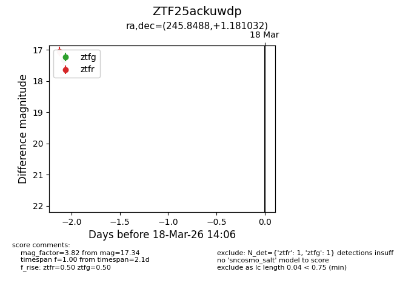
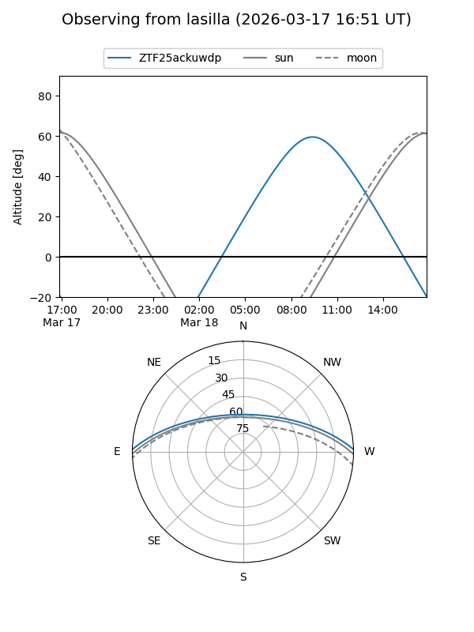
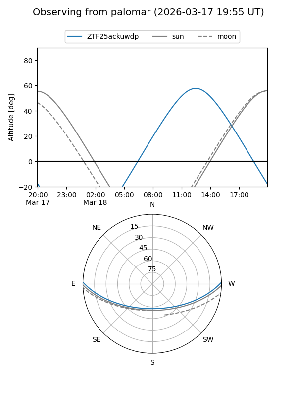

ZTF25ackuwdp
Target ZTF25ackuwdp at 2026-03-18 14:08
Aliases and brokers:
FINK: link
Lasair: link
ALeRCE: link
alt names
ZTF25ackuwdp (ztf,fink_ztf)
Coordinates:
equatorial (ra, dec) = 245.8488,+1.18103
equatorial (HMS+DMS) = 16:23:23.72,+01:10:51.71
galactic (l, b) = (15.1476,+33.02635)
Flags:
Photometry:
last ztfg=17.34, ztfr=17.06
1 ztfg, 1 ztfr detections
Lightcurve

Visibility


Additional plots